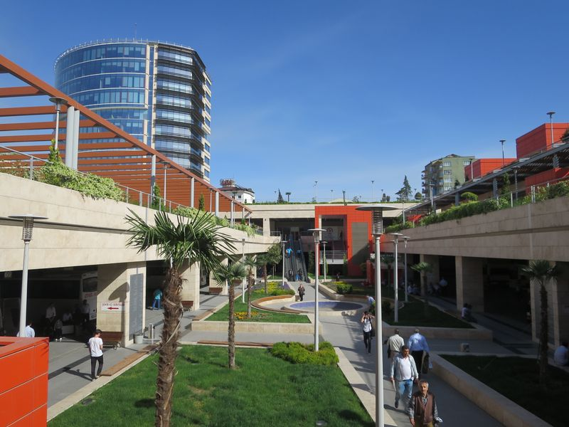
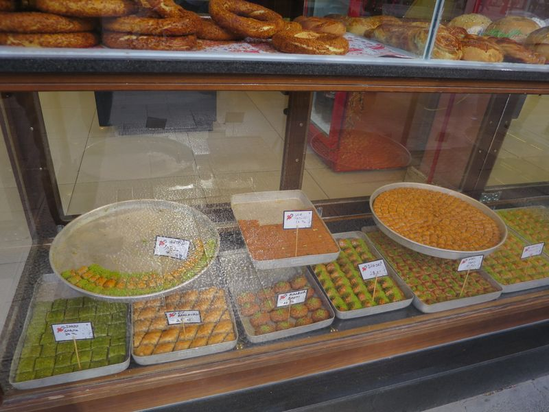
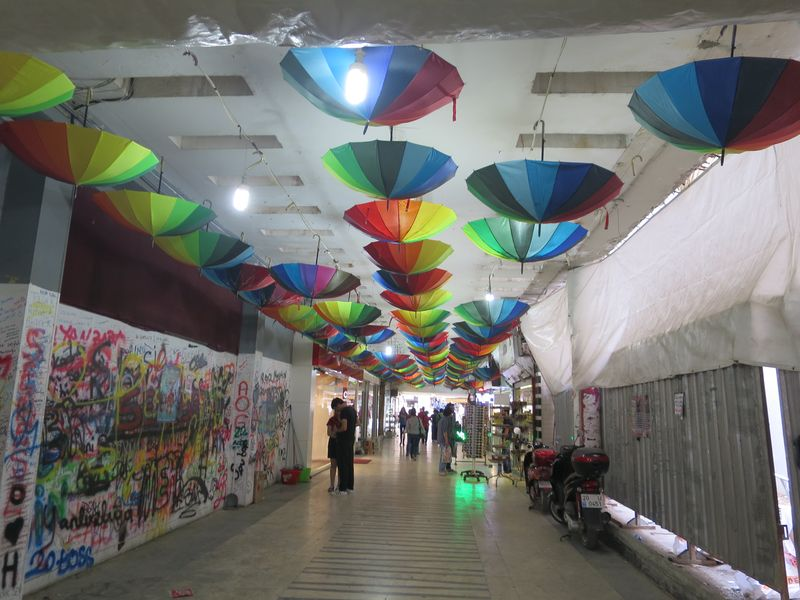
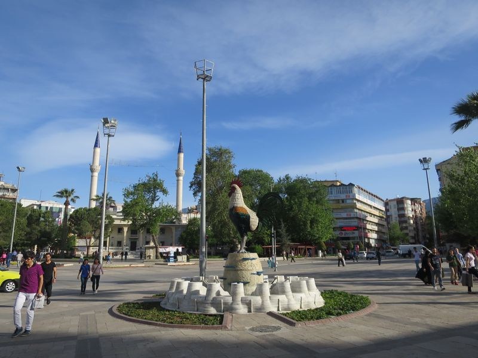
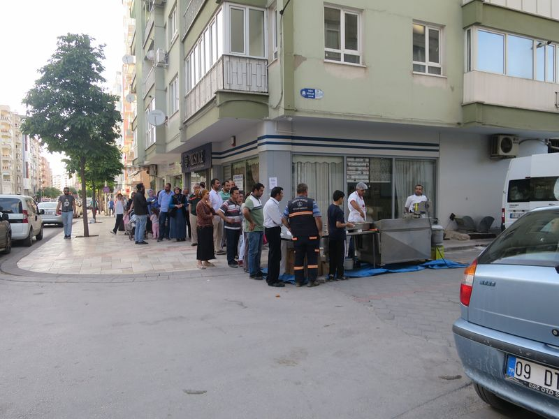
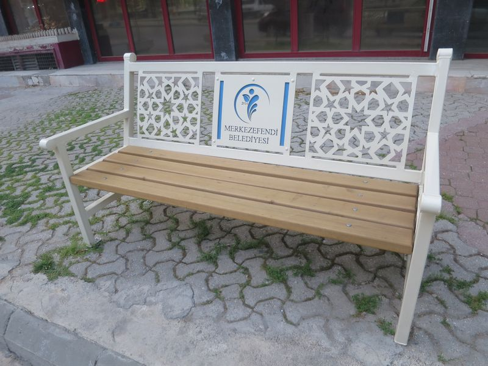
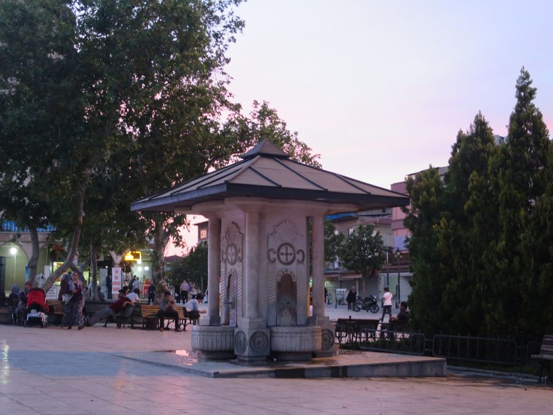
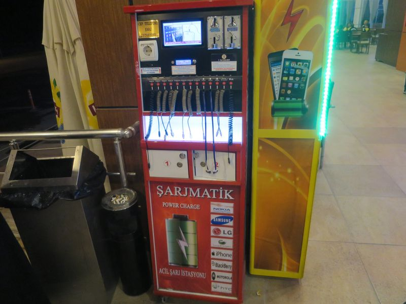

四月二十日 (三)
本來我打算今日 join tour 去 Aphrodisias，但係，冇遊客，冇 tour，自己去包車要百幾 TL，而 Aphrodisias 其實咪又係 Ephesus、Hierapolis 嗰類古城，所以，竟然突然轉咗去玩 paragliding (滑翔傘)。
係因為 T 同 B 去玩，我又跟埋去，130 TL，飛行時間只有十幾分鐘，應該算平掛，而且會飛過 Hierapolis 同嗰啲 travertine pools 呢。
不過，跟車去山頂等埋啲 pilots 食早餐，又要等風向又轉地點都搞成個幾鐘。B 問我驚唔驚，我其實都幾驚，未試過。終於等到可以飛，同場排我前面有另一個女遊客，我估係韓國人，一飛就叫到唔停，好搞笑。輪到我，個 pilot 叫我一齊跑，我冇跑仲一早就雙腳離地，全靠其他人拉住跑，不過都飛得起。
原來都唔係好驚，都幾好玩，反而我要擧住嗰支自拍棍，唔知點知啱，個 pilot 見到都會幫下我。降落之後等咗好耐，都未見下一個，開始擔心。
再等多一陣都仲係唔見 T 或 B，咁我哋就行返去 paragliding 公司，睇頭先影嘅相同片。但係我冇乜心機，仲係好擔心佢哋，睇咗幾睇就算，仲要冇買到啲相同片，其實都只係畀多 80 TL。
T 返到嚟，佢一樣係睇相同片，然後，好耐，仲未見 B。T 嘅 Pilot 同 T 講佢朋友都幾嚴重，去咗 Denzili 的醫院，嚇死我，不知有乜事。公司嘅人就係叫我們等，出去隨便食啲嘢返嚟，响對面嘅 Metro 巴士公司等，唔知點解，呢間 Metro 不只賣巴士票，反而更似一間旅行社，安排滑翔傘嘅人又响裏面喎。
B 返嚟喇，睇佢唔係好傷咋喎。原來係佢起跑時撞咗前面啲矮樹，身上同腳都有一條條痕，不過都止晒血，之前 T 嘅 pilot 啲說話令我仲以為佢哋撞咗埋啲崖呀，而家知道其實都只係好輕嘅傷。不過今日下晝本來想去附近個乜嘢 cave 就唔去喇。
然後 B 要求佢哋 refund，佢哋真係 refund 咗！而且所有醫藥和交通費都係佢哋畀，其實我覺得佢哋真係好好啦，俾著我我係冇諗過要人 refund 嘅呢，因為總覺得意外嘅嘢自己都有責任，唔怪得我成日俾人呃啦……
T 同 B 返酒店抖，我冇嘢做，Pamukkale 已經冇乜嘢好睇，就搭 dolmuş (van 仔) 去 Denizli。去到 Denizli，真係估唔到呢個城市幾好，就個 Octogar 都已經好過 Instanbul 嗰個，畀 5 TL 去寄存行李，就漫無目的咁周圍行。
似乎又好好彩咁樣揀啱方向，沿住一條主要車路行，經過嘅地方都好旺，好多當地人，食店，商店，公園，camii，仲去咗一個有好多 cafe 嘅地方。經過啲甜品店，第一次買嚟食，之前經過嘅我都唔敢入去買，因為甜品計重量買，我指手劃腳咁買一件咁大把，職員就真係切一件放上磅，收 1 TL就算。
又响 cafe 區吃咗件 toast，2.5 TL，荼只需 1 TL，好平，呢道啲人似乎唔識英文，但就用手機翻譯 app 嚟同我溝通。越行越遠，終於行到似係住宅區嘅地方，見到街邊有一條長龍，原來係排隊買即炸食物，心諗應該好好食，不過冇買埋一份。
市內有啲公雞嘅嘢，諗番响 Pumukkale 都見過，可能係 Denizli 區嘅標誌。經過一間店，買鮮橙汁飲，4TL 一大杯。我响旁邊啲櫈坐，個職員走過嚟傾偈，話：我叫 Isa (Jesus)，呢度乜都有得買，嗰個係我 boss，叫 David，賣雪糕嘅叫 Ibrahim (Abraham)。
日落前行返 Octogar 附近，因為巴士九點至開，我响呢度逛，响一座清真寺前面公園坐到天黑。返到去 Octogar，巴士又遲開，雖然隔籬位有人坐，仲要好多嘢講，不過我塞住耳仔聽歌，好快就訓著。
Denizli






Octogar 都有啲差電機，但其實巴士座位都有得差，唔知有冇人幫襯…
2016 Turkey
❮ Previous
Next ❯